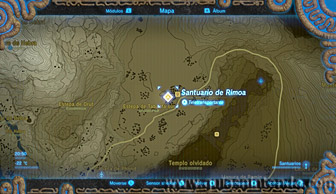
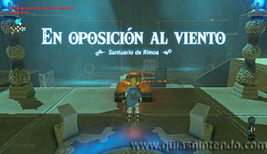
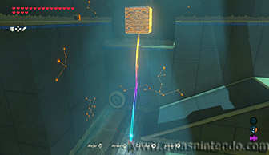
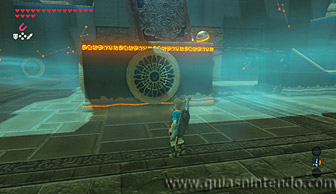
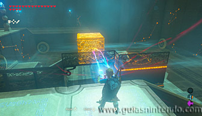
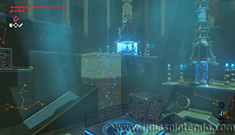
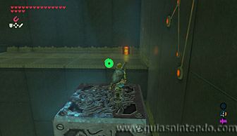
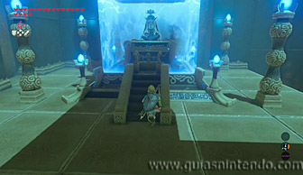

Puedes entrar en este santuario desde que llegas a la región de la torre de Hebra, justo al lado de la Posta de la Estepa.

Nada más comenzar verás una esfera y enfrente, más abajo el agujero donde debes introducirla. Sin embargo, de momento no lo hagas, ya que cuando eso ocurra se activará un mecanismo que eleva una plataforma y tú debes estar sobre ella para alcanzar la parte superior del santuario.

Lo primero que debes hacer es colocar uno de los bloques de metal en el hueco que hay cerca del cofre que puedes ver arriba. Así podrás cogerlo fácilmente cuando subas.

Después colócate el segundo bloque delante del agujero y deja la esfera junto él. El bloque impedirá que el viento mueva o tira la esfera.

Después sube a la plataforma que se elevará, está subiendo la rampa que hay en la esquina. Desde allí levanta el bloque de metal para que la esfera se pueda introducir en el agujero. Si el viento no la empuja por estar muy lejos de él, hazlo tú mismo con el bloque de metal. Así se pondrá en marcha el mecanismo que te elevará junto al altar.

Antes de irte no olvides ir a por el cofre saltando sobre el primer bloque de metal que colocaste. Recibirás un Núcleo ancestral.

Después podrás examinar el altar para obtener un símbolo de valía.
